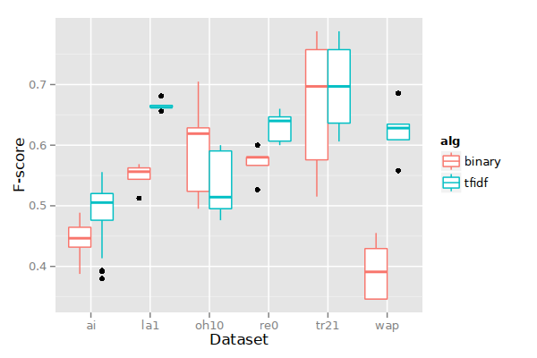
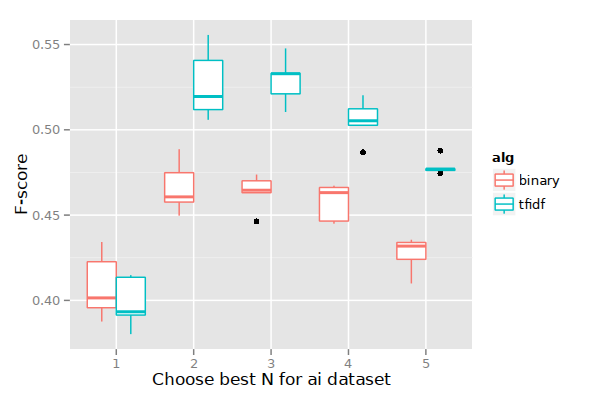

Bayesian methods
Table of Contents
Basic probability calculus
We say that the probability of an event occurring is \(P(A)\) where \(A\) is the event. Note that \(0 \leq P(A) \leq 1\) by convention. For example, the probability of a fair coin landing heads up is \(P(H) = 0.5\), and perhaps the probability of a lightning storm today is \(P(L) = 0.01\). \(P(\neg A)\) is always equal to \(1.0 - P(A)\).
Sometimes we want to describe the probability of some event given that we know (or are supposing) that some other event occurred. For example, the probability of a lightning storm is higher if the sky is cloudy, i.e., \(P(L|C) > P(L|\neg C)\) (where \(C\) means the sky is cloudy and \(\neg C\) means it is not).
If two events \(A\) and \(B\) are independent (e.g., knowing that \(A\) occurred tells you nothing about whether \(B\) occurred), then \(P(A, B) = P(A)P(B)\).
If \(A\) and \(B\) are not independent, then they are conditional, e.g., knowing that \(A\) occurred changes the probability that \(B\) occurred. Now we have,
$$P(A,B) = P(A|B)P(B),$$where \(P(A|B)\) means “probability of \(A\) given that \(B\) is known to have occurred.”
Of course, if \(A\) and \(B\) are independent, then \(P(A|B)=P(A)\), so we’re back to the definiton of independent probabilities.
Bayes’ insight
Notice that \(P(A, B) = P(B, A)\) (always), simply because the comma doesn’t add any meaning, it’s just a way of writing “\(A\) and \(B\) both occurred (and not in some special temporal sequence).”
Thus, the conditional probability of \(P(B,A)\) is,
$$P(B,A) = P(B|A)P(A),$$which means,
$$P(B|A)P(A) = P(A|B)P(B),$$and rewriting we get,
$$P(B|A) = \frac{P(A|B)P(B)}{P(A)}.$$So who cares? Well, what we just discovered is that the conditional probability of \(B\) given \(A\) (i.e., \(P(B|A)\)), depends entirely on the conditional probability of \(A\) given \(B\) and the prior probabilities of \(A\) and \(B\) (i.e., \(P(A)\) means how often does \(A\) occur with or without \(B\) occurring also? same question for \(P(B)\)).
If we take \(A\) and \(B\) to be events like “\(A\) = your house alarm is making noise” and “\(B\) = a burglar is inside your house,” then we have that “the probability that a burglar is inside your house given that you know your house alarm is making noise depends on the chance of your house alarm making noise given a burglar being in your house (\(P(A|B)\)), the prior probability of being robbed at all (\(P(B)\)), and the prior probability of your house alarm making noise from burglars, cats, thunder, etc. (\(P(A)\)).”
Bam! We have a way of calculating the probability of events we’re not sure about (the chance there is a burglar in my house) given the probabilities of events we do know about. This micro insight has revolutionized computer science, medicine, pyschology, etc. etc., beginning in the 1980s or so. The person who made these and more complex calculations achievable in computer software, Judea Pearl, was awarded the Turing Award in 2012. The importance of Bayes’ micro insight cannot be overstated.
{kind=link}
Naïve Bayesian classification
Feature vectors
Documents are simply word frequency vectors. No tf-idf transformation is done. We can write \(X_j = (tf_{j1}, tf_{j2}, \dots, tf_{jk})\).
Category vectors
Each category vector is represented as a series of probabilities, one probability per word (each vector dimension represents a word, just like a document feature vector). Each probability means, “the probability of this word being present in a document that is a member of this category.” Thus, the category vector has terms \(C_c = (p_{c1}, p_{c2}, \dots, p_{ck})\), where
$$p_{ci} = P(w_i|C_c) = \frac{\sum_{j \in C_c} tf_{ji}}{\sum_j tf_{ji}},$$in other words, \(p_{ci}\) is the total number of occurrences of word \(i\) in documents that are in category \(c\), divided by the total number of occurrences of word \(i\) in all documents. Thus, we get a probability of word \(i\) occurring in a document that has category \(c\). To make calculations more reasonable later, we’ll say that \(p_{ci} = 0.001\) if word \(i\) never appears in a document from category \(c\).
Algorithm
We assume, for simplicity, that the occurrences of words in documents are completely independent. This is patently false since, for instance, the words…

